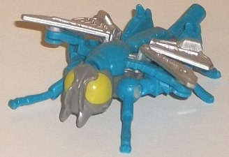
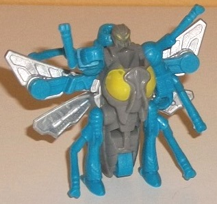
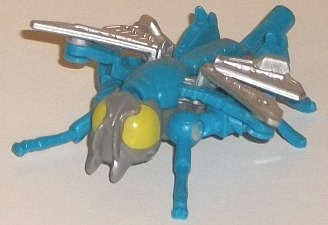
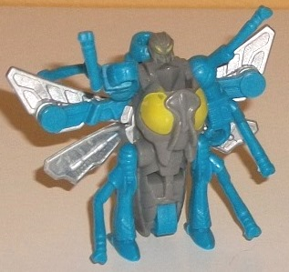
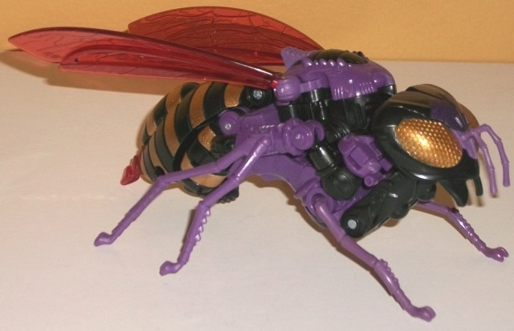
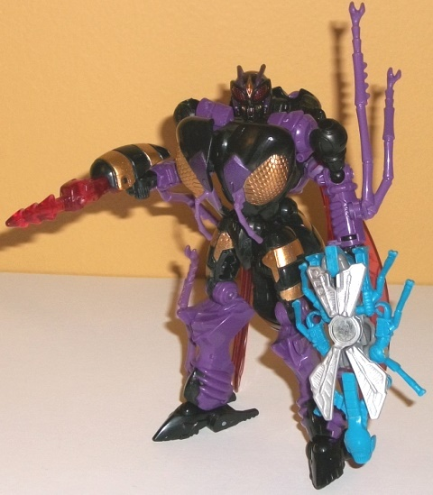

 
Size : Legends partner
Difficulty of Transformation : Very Easy
Color Scheme : Moderately light blue, gray, silver, and some pea green
Individual Rating : 4.2
Allegiances : Waruder
(NOTE: Because the following two toys are
repaints, the rest of this is not a full-blown review. This mainly covers
any changes made to the two and their color schemes, and merely compares
them to the original versions of these molds. For a review on Generations
Legends Waspinator-- the mold used for Ripper-- go
here
.
For a review on Generations deluxe Waspinator-- the mold used for Parasite--
go
here
.)
 Ripper
Ripper


Size
: Legends partner
Difficulty of Transformation
: Very
Easy
Color Scheme
: Moderately light blue,
gray, silver, and some pea green
Individual Rating
: 4.2
Ripper is the "pilot"
figure for Parasite-- though it should be emphasized that the toys cannot
interact together in this way. The idea behind this is that the Waruders
were the "bad guys" for the Diaclone line, one of the main precursor lines
to the original Transformers. In Diaclone, the mechs were piloted; they
weren't sentient, hence the "pilot" figures for these redecos. Like the
other pilot figures in this large troop builder set, Ripper has a main
body made up of a straightforward gray plastic, along with silver paint
on the wings and some fitting pea "bug guts" green paint on the eyes for
both modes. Ripper has a moderately light shade of blue plastic used on
the rest of him, which-- despite it not really fitting a wasp-- works pretty
well with the gray and silver. I wish it was just a TAD darker for a bit
more contrast, but it adds some much-needed color to the figure and is
a pretty decent shade of said color to boot.
No mold changes have
been made to Ripper.
 Parasite
Parasite


Size
: Deluxe (comes in a 4-pack
with
Mudfighter
,
Paralyzer
,
and
Storm Rider
)
Difficulty of Transformation
: Medium
Color Scheme
: Black, moderately
dark purple, transparent pale red, and some metallic gold
Individual Rating
: 8.7
The "Parasite" redeco
is based off a pretty obscure source-- back in the 2000s, a planned "Halloween
Horrorcon" redeco of
Transmetal Waspinator
was going to be made as a Wal-Mart exclusive, but was cancelled for whatever
reason. Well, even though this isn't the Transmetal version of Waspinator,
we're getting that color scheme on a Waspy! The base color scheme-- of
black, purple, and gold-- works EXTREMELY well together, especially in
the amounts that they're used on the figure. The gold stripes on the abdomen,
combined with the black plastic, looks particularly nice, as this is a
really glittery, metallic shade of the color. It also looks pretty boss
on the bug eyes. The purple I wish was just a TAD lighter, but it's still
a really nice color against the black and gold, used mostly on the insect
legs, upper back, and lower robot arms and legs. The purple is spread throughout
all the black plastic very well, so there's no large area on Parasite that
is just one color. (That said, the lower legs could've used a little more
paint beyond just more black-- using the gold a little more would've been
preferable, methinks.) The robot face is also extremely well-painted, with
a gold crest and antennae, gold teeth, and purple mandibles. The whole
combo is quite impressive, given how small these details are. The last
color on Parasite is a transparent pale red used on his wings, robot eyes,
and stinger, which works pretty well as a "warm" color against a mostly
"cold" color scheme. Plus, the red light piping on the robot eyes just
looks REALLY nice like this. I'm glad they didn't go for a lighter cherry
red, as that would've looked too light against the darker scheme.
No mold changes have
been made to Parasite; however, like the other Waruders in this 4-pack,
the robot heels are loose, so the mold can't stand as easily as the original
Waspinator version can. Worse, it's not simply a loose ball joint you can
fix up with floor or nail polish either. That said, this doesn't outright
ruin the figure, it's just a minor annoyance.
The Parasite/Ripper set
is my favorite of the 4 Waspinator "duos" in this troop builder set. Ripper
is tied with Crusher for my favorite of the pilot figures with a nice main
color, and Parasite just looks fantastic-- the purple, black, and gold
go together exceedingly well, the faces and abdomen in particular. Plus,
a super-obscure homage of a toy never released-- can't beat that. So, if
you only buy one duo from this set, I'd make it these two.
Reviews by Beastbot